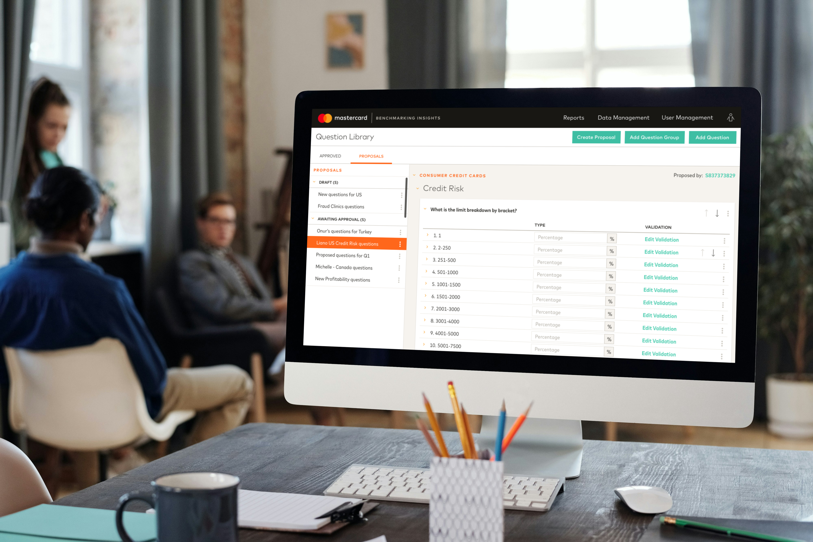

Featured work
Selected projects

Advise for Consumer Packaged Goods
End-to-end UX and UI design for a live AI-powered B2B analytics platform that unified market research data across portals, eliminating manual consolidation for CPG analysts. Designed dashboards, navigation, filtering, and a design system across two rounds of the product.

User Access Review Management
Replaced a manual, email-based access review with a secure in-platform recertification workflow for a global banking portal. Conducted interviews across two phases, mapped the end-to-end workflow, and iterated through usability testing, achieving a CSAT of 6.0/7.0.

Design System Management
Sole design owner of a system spanning 100+ banking applications worldwide, introducing versioning, data visualization guidelines, and mobile components while growing adoption from 35 to 53 transversal applications in a single year.

Mastercard Panels
Transformed Mastercard's manual PowerPoint reporting into a multi-module self-service analytics platform. Owned discovery workshops, functional specifications, and interaction design across core modules, including a chart builder that scored 4.1/5.0 in usability testing.

Mastercard Benchmarking Insights
Replaced an email-and-spreadsheet benchmarking process with a secure, end-to-end platform. Automated benchmark calculation and report delivery, giving Mastercard full control over data integrity across the full survey lifecycle.
Forthright Events Website
Designed and built a custom events website and admin CMS for a Philippines-based sports and events company, replacing a €160/year Squarespace subscription with a purpose-built solution that costs almost nothing to run.